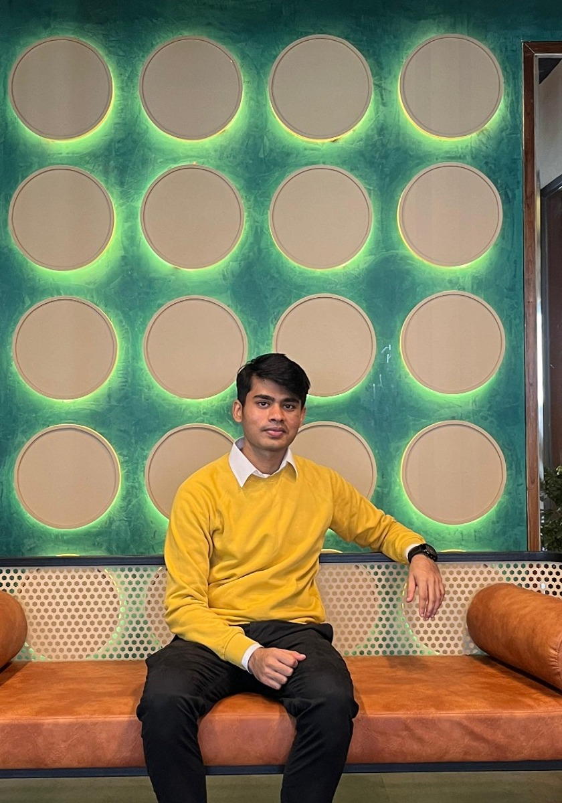

Open to internships & early-career opportunities
MD. Nafiul
Haque Nafee.
Computer Science Undergraduate at BRAC University.
I build intelligent systems at the intersection of AI, data and real-world products — from low-resource Bangla LLM research to predictive analytics, computer vision and camera-powered Android experiences.
I work acrossAI / ML Engineering

RAG
NLP
CV
Data
Android
Dhaka, Bangladesh
74%dialect QA gap closed
0.85PR-AUC predictive analytics
01 / ABOUT
Curiosity, backed by things I actually build.
I’m a Computer Science undergraduate who likes turning messy, real problems into systems that can be measured, tested and improved.
My work spans natural language processing, LLMs, information retrieval, predictive analytics, computer vision and Android product development. I’m especially drawn to problems where technology can make information more accessible and decisions more useful.
Right now, I’m finishing my undergraduate research on dialect-aware Bangla question answering and strengthening my applied data-science foundation through GCI World 2026 at the Matsuo-Iwasawa Laboratory, The University of Tokyo.
CURRENT FOCUS
Data Science × Applied AI
Building toward roles where analysis, machine learning and product thinking meet.
LANGUAGES
Python · Java · Kotlin · JavaScript
AI / DATA
PyTorch · Scikit-learn · Pandas · NumPy
PRODUCT
Android · Compose · Firebase · MERN
RESEARCH
RAG · LoRA/QLoRA · Retrieval · Evaluation
02 / RESEARCH
Making Bangla AI work closer to how people actually speak.
Dialect-Aware Bangla Question Answering with RAG & Routed Experts
Many Bangla QA systems are built around Standard Bangla. My thesis team studied what happens when the same questions arrive in Chittagonian, Sylheti or romanized Bangla — and built a modular pipeline to close that gap.
Dialect detection→Normalization→Domain routing→Retrieval→LoRA expert
0.526 / 0.488 / 0.476Final QA score — Standard / Ctg / Syl
76.3 / 74.0chrF++ normalization — Ctg / Syl
60.7% → 77.3%Gold evidence visible in top-3
38,283 + 106,127Dialect pairs + QA items prepared
Research takeaway
The final performance gain is not attributed to one component. Better retrieval and uncertainty-aware domain search helped every variety, while normalization specifically reduced the Standard–dialect disadvantage. The thesis reports both positive and negative results instead of forcing the original hypothesis.
03 / SELECTED WORK
Projects with measurable outcomes.
01DATA / ML
Predictive Analytics & Explainable ML
GPU-accelerated XGBoost pipeline across ~95,000 Steam titles, combining threshold tuning, strict-vs-full feature analysis and model interpretation.
0.76 F10.85 PR-AUC
XGBoostPredictive MLExplainability
02COMPUTER VISION
Multi-Task Computer Vision
A U-Net–DenseNet121 system that learned pet segmentation and 37-breed classification in one deep-learning project.
92.4% mIoU89.3% accuracy
PyTorchU-NetDenseNet121
03NLP
News Classification with NLP & Deep Learning
Compared sparse and neural text representations across classical ML and recurrent models for four-class news classification.
91.9% test accuracyGRU best model
NLPGRUWord2Vec
04ANDROID / VISION
NHT Fitness
Native Kotlin/Compose fitness and wellness app with workout, nutrition, hydration, reminders, offline exercise guides and experimental pose-based push-up counting.
31 exercise guidesOn-device pose prototype
KotlinComposeML KitFirebase
05GESTURE GAME
Fire / Water / Lightning
Camera-driven Android game prototype that maps hand-drawn shapes to elemental actions, with multiplayer-oriented flows and progression systems in source.
4 gesture shapesCameraX + MediaPipe
AndroidMediaPipeFirebase
06MOTION GAME
Six Seven
Camera-controlled hand-motion game prototype using two-hand landmark tracking, smoothing, hysteresis/debounce and timed scoring.
60s scoring session2-hand tracking
KotlinCameraXMediaPipe
More builds
Full-stack MERN applications, Music Store, Spotify Android clone and other university projects live on GitHub.
Browse GitHub ↗04 / JOURNEY
Learning in public. Building with intent.
B.Sc. in Computer Science · BRAC University
Building a broad foundation across AI/ML, software engineering and applied computing. Expected graduation: January 2027.
GCI World 2026 · Matsuo-Iwasawa Laboratory, The University of Tokyo
Currently enrolled in applied data-science training spanning Python, NumPy, Pandas, visualization, machine learning, model evaluation, feature engineering, SQL, time series and practical business applications.
Undergraduate Thesis · Low-resource Bangla AI
Benchmarked seven open models, built a modular RAG pipeline, evaluated dialect normalization and investigated the trade-offs between routing, retrieval, safety and answer quality.
Publicity Manager · ATOMIC BAFSK Science Club
Supported science communication, publicity and event organization, including the 2019 Olympiad Competition.
05 / TOOLKIT
Tools are useful. Judgment matters more.
PythonPyTorchScikit-learnPandasNumPyNLPRAGLoRA / QLoRAComputer VisionPredictive AnalyticsKotlinJetpack ComposeFirebaseGit
AI / ML
Machine Learning · Deep Learning · NLP · LLMs · RAG · Computer Vision · Explainable AI
Data
Predictive Analytics · Data Preparation · Model Evaluation · Feature Analysis · Statistical Testing
Engineering
Python · Java · Kotlin · JavaScript · Android · MERN · Git · Jupyter · VS Code
Product mindset
Prototype → measure → find failure modes → iterate. I care about what a system does under real constraints, not only the demo.
06 / CONTACT
Have a hard problem?
I’d like to hear it.
I’m interested in internships and early-career opportunities in data, AI/ML, analytics and product technology — especially teams that value experimentation, measurable outcomes and learning fast.